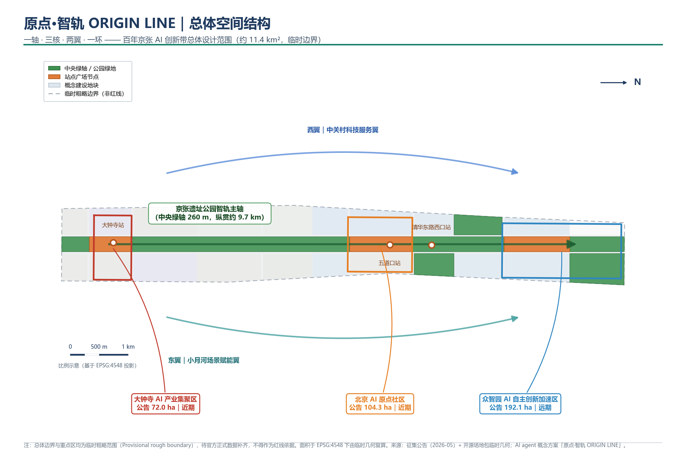
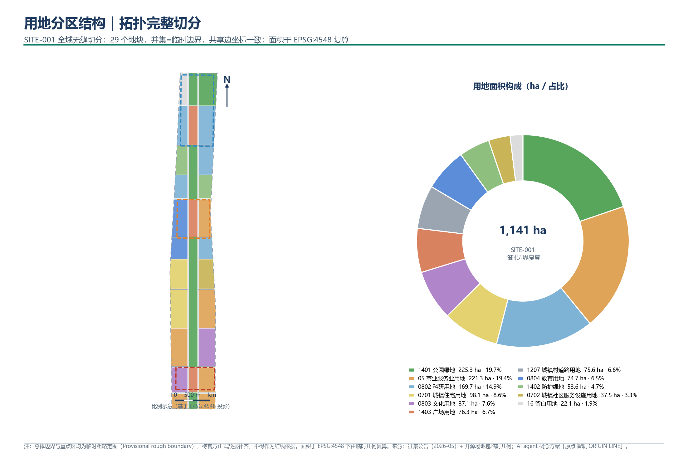
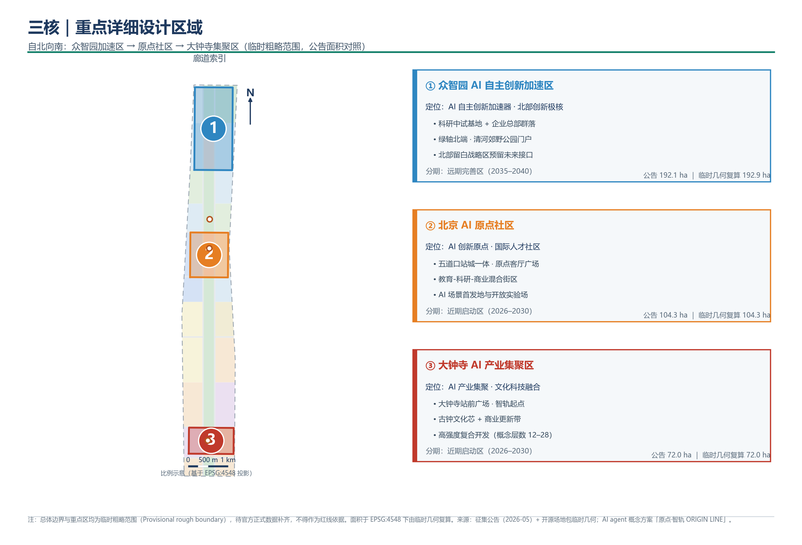
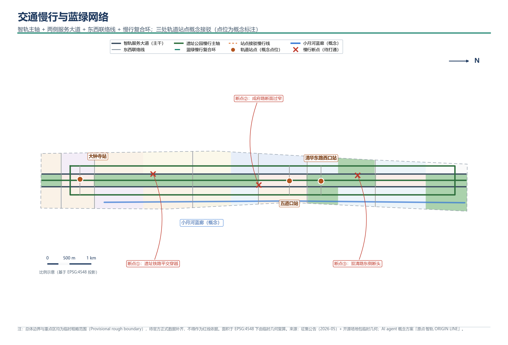
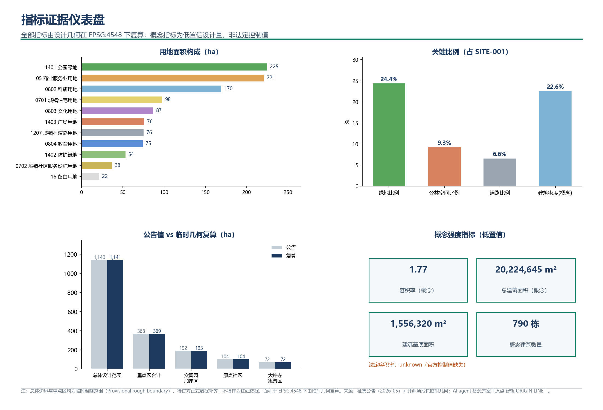

11,412,825m²
总体设计范围面积 · site_area_sqm
1,141.3 ha · 公告约 11.4 km²
24.44%
绿地比例 · green_ratio
绿地 278.9 ha
9.31%
公共空间比例 · public_space_ratio
公共空间 106.3 ha
1,556,320m²
建筑基底面积（概念） · building_footprint_area_sqm
790 栋概念建筑
3处
重点详细设计区域 · key_area_count
公告合计 368.4 ha
ST.01 / STRUCTURE
总览地图总体空间结构

一轴：京张遗址公园智轨主轴（260 m 中央绿轴，纵贯约 9.7 km）；三核：众智园 / 原点社区 / 大钟寺；两翼：中关村科技服务翼（西）、小月河场景赋能翼（东）；一环：蓝绿慢行复合环。
三层范围
统筹研究范围（公告约 43.6 km²，文字四至）⊃ 总体设计范围（公告约 11.4 km²，本方案设计对象）⊃ 重点详细设计区域（公告约 368.4 ha，三处）。本页几何仅覆盖后两层的临时替代边界。
ST.02 / ZONING
用地分区拓扑完整切分

SITE-001 全域拓扑完整切分：29 个地块无缝无重叠，并集等于临时边界，共享边坐标一致；覆盖 0701 / 0702 / 05 / 0802 / 0803 / 0804 / 1207 / 1401 / 1402 / 1403 / 16 共 11 类用地代码。
ST.03 / KEY AREAS
重点区域三核
① 众智园 AI 自主创新加速区
北部创新极核。科研中试基地 + 企业总部群落，低强度开发（概念 3–10 层）；绿轴北端门户衔接清河郊野公园段；西北侧留白战略区（16）预留未来接口。
公告 192.1 ha ｜ 临时复算 192.9 ha ｜ 分期：远期 2035–2040
② 北京 AI 原点社区
AI 创新原点、国际人才社区。五道口站城一体 + 原点客厅广场（1403）；教育（0804）- 科研（0802）- 商业（05）混合街区，中强度开发（概念 6–18 层）；AI 场景首发地与开放实验场。
公告 104.3 ha ｜ 临时复算 104.3 ha ｜ 分期：近期 2026–2030
③ 大钟寺 AI 产业集聚区
AI 产业集聚、文化科技融合。大钟寺站前广场为智轨起点（1403）；古钟文化芯（0803）+ 商业更新带（05），高强度复合开发（概念 12–28 层）。
公告 72.0 ha ｜ 临时复算 72.0 ha ｜ 分期：近期 2026–2030

三处重点区自北向南索引与定位任务；公告面积与临时几何复算值并列对照。
ST.04 / MOBILITY + BLUE-GREEN
交通慢行 · 蓝绿公共空间复合系统

智轨服务大道（两侧）+ 六条东西联络线 + 遗址公园慢行主轴 + 蓝绿慢行复合环；大钟寺、五道口、清华东路西口三站概念接驳；标注三处慢行断点待打通。小月河蓝廊为概念示意。
ST.05 / RENEWAL
建筑与更新项目概念量级
概念建筑基底 790 栋，落位于 05 / 0701 / 0702 / 0802 / 0803 / 0804 可建设地块内，内缩 16 m 规则网格生成；概念层数南高北低（南部 12–28 层、中部 6–18 层、北部 3–10 层）。拆改留概念分类：保留 129 栋 · 改造 259 栋 · 新建 402 栋。
建筑基底合计 1,556,320 m² · 建筑密度（概念）22.6% · 均为概念设计量，非法定控制值。
ST.06 / SCENARIOS
AI 场景六组场景卡
AGENT.1
智轨无人接驳环
绿轴两侧低速无人接驳环线，串联三站三核。
公告任务 1.4
AGENT.2
遗址数字孪生廊道
京张遗存全线数字孪生 + AR 导览。
公告任务 1.3
AGENT.3
AI 场景首发大厅
五道口原点客厅：新技术首测、首秀、首发。
公告任务 1.5
AGENT.4
社区能源与碳大脑
原点社区能碳双控示范，分钟级调度。
公告任务 1.5
AGENT.5
蓝绿碳汇监测网
绿轴 + 小月河蓝廊生态传感网络。
公告任务 1.4
AGENT.6
众智园开放中试平台
科研中试 + 企业总部 + 数据开放沙箱。
公告任务 1.5
ST.07 / EVIDENCE
核心指标证据可复算

用地面积构成、关键比例、公告值 vs 复算值对照、概念强度指标；全部来自 metrics.json，与几何可复算一致。
ST.08 / COVERAGE
任务覆盖公告 + agent 任务书
| 任务 | 覆盖说明 |
|---|
| 公告 1.3 遗址活化 | 智轨主轴以京张遗址公园为脊梁，遗存节点全线保留活化（数字孪生廊道）。 |
| 公告 1.4 交通与蓝绿 | 两侧服务大道 + 六条东西联络线 + 慢行复合环 + 三站接驳；绿轴 260 m 纵贯，绿地比例 24.4%。 |
| 公告 1.5 AI 场景 | 六组场景卡覆盖交通、遗址、首发、能碳、生态、中试，均落位于三核与绿轴节点。 |
| agent.1 – agent.6 | 命名体系、生态案例、场景卡、朝圣地标、文化叙事、长期运营，详见完整报告。 |
ST.09 / PROVENANCE
来源与假设可追溯
来源
- 征集公告（2026-05，SRC-2026-BJ-GH-QUAL-PREANNOUNCEMENT）：范围层级、重点区名称与公告面积。
- 开源场地包临时几何（DATA-SRC-PROVISIONAL-BOUNDARIES-20260605）：SITE-001 与三处重点区粗略替代边界。
- 用地代码：国土空间调查分类项目子集（brief/site-package/enums/land_use_codes.json）。
假设
- 官方精确边界、控规控制值（容积率 / 限高 / 建筑密度 / 绿地率 / 退线）缺失：相关法定指标记 unknown，概念值低置信标注。
- 轨道站点（大钟寺 / 五道口 / 清华东路西口）为概念点位，按大致纬度标注，非测绘位置。
- 建筑基底、层数、拆改留分类均为概念生成结果，仅用于方案表达。
- 面积统计算法：EPSG:4326 → EPSG:4548 投影后 shapely 复算，union 去重。
ST.10 / SELF-CHECK
自检状态四门全过
DETERMINISTIC_VALIDATION · PASS
SPATIAL_REVIEW · PASS
VISUAL_PACKAGING · PASS
PROFESSIONAL_EVIDENCE · PASS
3 条 provisional 类 minor 提示
用地分区通过无缝 / 无重叠 / 全覆盖校验；建筑、绿地、公共空间图层均在 SITE-001 内；本页 data-metric 数值与 metrics.json 完全一致。方案已随 PR #2049 合并入仓库 main。